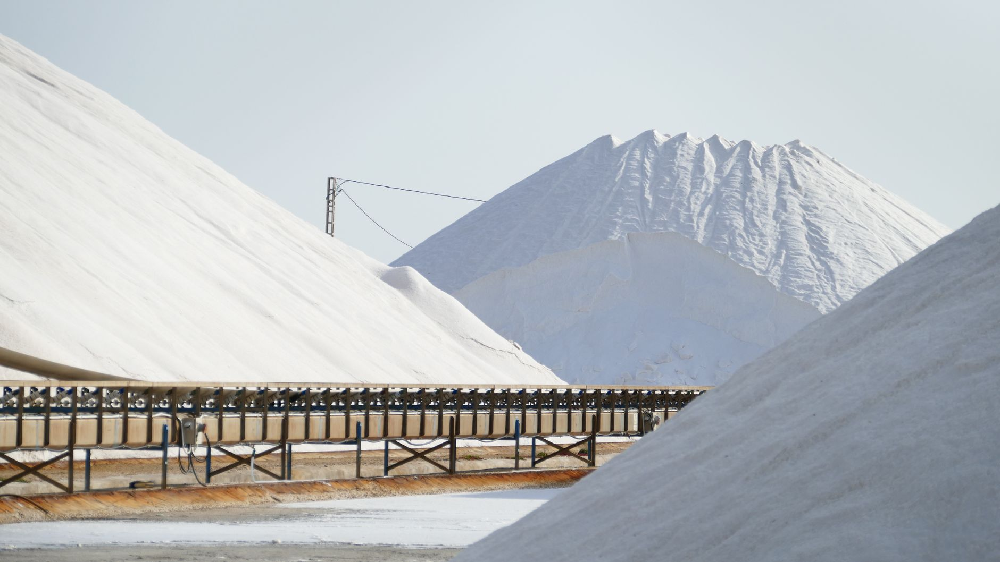

美, 희귀금속 공급망 다변화 박차…동맹국 소재 협력 확대

미국이 중국과 러시아에 대한 희귀금속 및 핵심 광물 의존도를 낮추기 위해 동맹국들과의 공급망 협력을 가속화하고 있다. 최근 잇따른 수입 통제 조치 이후, 안정적인 대체 공급선 확보가 미국 산업 안보 정책의 최우선 과제로 부상했다.
미국 지질조사국(USGS)에 따르면 미국이 수입에 절대적으로 의존하는 핵심 광물은 50종 이상이며, 이 중 코발트, 리튬, 희토류, 텅스텐, 갈륨, 게르마늄 등이 특히 취약한 품목으로 분류된다. 이들 광물의 상당수는 중국이 전 세계 생산량의 60~90%를 장악하고 있다.
미국은 2025년 기준 한국, 일본, 호주, 캐나다, EU 등과의 '광물 안보 파트너십(MSP, Minerals Security Partnership)'을 통해 핵심 광물 공급망 협력을 제도화하고 있다. MSP는 탐사·채굴·가공·재활용 전 단계에 걸친 공동 투자 및 정보 공유를 목표로 한다.
특히 호주와의 협력이 두드러진다. 호주는 리튬·코발트·니켈·희토류 등 풍부한 광물 자원을 보유하고 있으며, 미국은 호주 자원 개발 프로젝트에 대한 금융 지원을 대폭 확대하고 있다. 미국 수출입은행(EXIM)은 2025년 호주 광물 프로젝트에만 약 30억 달러의 금융 지원을 승인했다.
한국도 MSP 참여국으로서 미국과의 핵심 광물 협력을 확대하고 있다. 한국광물자원공사(KOMIR)는 캐나다, 아프리카 등지에서 희귀금속 광산 지분 확보에 나서고 있으며, 정부는 전략 광물 비축량을 2030년까지 현재의 2배 수준으로 늘리는 목표를 세웠다.
미국 상무부 관계자는 "희귀금속 공급망은 더 이상 순수한 경제 문제가 아니라 국가 안보 문제"라며 "동맹국들과 함께 중국 의존도를 2030년까지 절반 이하로 낮추는 것이 목표"라고 밝혔다.
아프리카도 새로운 광물 공급 거점으로 급부상하고 있다. 잠비아·짐바브웨는 코발트와 리튬, 나미비아는 희토류, 탄자니아는 니켈과 흑연에서 주목받고 있다. 미국과 EU는 아프리카 광물 개발에 대한 ODA(공적개발원조)를 전략적으로 활용하며 영향력을 확대하고 있다.
중국은 이에 맞서 갈륨, 게르마늄, 흑연 등에 대한 수출 통제를 강화하며 자원 패권을 지렛대로 삼는 전략을 구사하고 있다. 2024~2025년에 걸쳐 중국의 핵심 광물 수출 허가 건수가 크게 줄어들면서 글로벌 제조업 공급망에 상당한 충격이 가해진 바 있다.
EU는 2024년 발효된 '핵심원자재법(CRMA)'을 통해 2030년까지 전략 광물의 역내 채굴 10%, 가공 40%, 재활용 15% 이상을 달성하는 목표를 법제화했다. 이를 위해 회원국들의 광물 허가 절차를 대폭 간소화하고 민간 투자를 유도하고 있다.
글로벌 희귀금속 시장에서는 공급 다변화 수혜를 입을 기업들에 대한 투자 관심도 높아지고 있다. 미국, 캐나다, 호주 등지에서 희토류와 핵심 광물 개발에 나서는 주니어 광산 기업들의 주가가 2025년 들어 평균 30% 이상 상승한 것으로 집계됐다.
전문가들은 희귀금속 공급망 재편이 향후 10년간 글로벌 제조업 지형을 바꾸는 핵심 변수가 될 것이라고 예측한다. 한 국제 자원 전략 연구소 연구원은 "자원 확보 경쟁에서 앞서는 국가와 기업이 첨단 제조업의 패권을 쥘 가능성이 높다"고 분석했다.
한국 기업들에게는 MSP 참여와 글로벌 광산 지분 확보가 단기 비용이 아닌 장기 경쟁력 투자라는 인식의 전환이 필요하다. 국내 배터리·반도체·방산 기업들이 안정적인 소재 공급망을 확보하지 못할 경우, 수요가 폭발적으로 늘어나는 시점에 생산 차질이 발생할 수 있다는 경고가 나온다.
시장 전문가들은 글로벌 희귀금속 공급망 재편이 완료되는 2030년대 초반까지는 가격 변동성이 지속될 것으로 전망한다. 이 과정에서 재활용·대체소재·공급망 다변화 관련 기업들이 투자 유망 섹터로 꾸준히 주목받을 것이라는 분석이다.